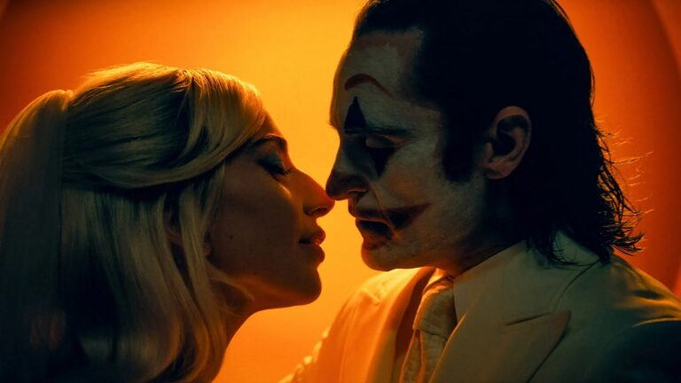

Огляд фільму “Джокер: Божевілля на двох” / Joker: Folie à Deux. Хоакін
Фенікс та Леді Гага у дивному мюзиклі за коміксами DC

Перша частина “Джокера” / Joker (2018)від Тодда Філліпса показала, що
сучасні кінокомікси все ще здатні дивувати. Навіть якщо для цього авторам
кіно довелося надихатися “Таксистом” / Taxi Driver (1976) Мартіна Скорсезе
та іншими історіями про аутсайдерів та соціально незахищені прошарки
населення. Можна довго сперечатися про цінність “Джокера” як витвору
мистецтва, але касові збори у мільярд доларів, визнання критиків та навіть
відчутний вплив на суспільство показали, що люди люблять подібні сценарії.
Здавалося б, “Джокер” розповів цілком завершену та самостійну історію. Але
в коміксах, як знають фанати цього медіуму, ніколи нічого по-справжньому
не завершується. А де є Джокер, там буде і Гарлі Квінн. Саме подібним
шляхом пішов сюжет “Джокера: Божевілля на двох” / Joker: Folie à Deux,
заразом скориставшися талантами Леді Гаги та перетворивши все на мюзикл.
Результат вартий довгих обговорень, бо дати однозначний вирок стрічці так
просто не вийде. Однак навряд ви скоро забудете побачене.
Артур Флек (Хоакін Фенікс) перебуває в ув’язненні у Психлікарні Аркхем
після подій першої частини. За цей час його образ Джокера встиг стати
символом для людей, про нього навіть зняли фільм. Популярність тішить
Артура, але особливо не допомагає, адже попереду ще судові засідання, які
мають вирішити долю чоловіка. В психлікарні він знайомиться з дівчиною
Гарлі Квінзель (Леді Гага), яка щиро захоплена Джокером. В них починається
дивний та небезпечний роман, який здатен як остаточно зруйнувати психіку
Флека, так і стати порятунком для нього. Звісно ж, якщо Джокер знову
вирішить взяти все у свої руки.
Пафосний підзаголовок стрічки Folie à Deux несе у собі одразу декілька
сенсів. Французький вираз folie à deux буквально означає “божевілля двох”,
його використовують у психіатрії в тих випадках, коли симптоми аналогічних
психічних захворювань спостерігаються одразу у двох пацієнтів,
розвиваються вони паралельно. До того ж цікаво, що іноді у подібних
випадках вийде визначити домінантну особу, під вплив захворювань якої
потрапляє інша людина. Тоді остання починає думати, що вона також хвора та
відчуває симптоми, хоча насправді це лише самоомана. Таке трактування
досить важливе для сценарію. З іншого боку, використання французької мови
у назві одразу налаштовує на дух софізму, кохання та творчого піднесення.
А ще Folie à Deux – це альбом рок-гурту Fall Out Boy, але це вже просто
цікавий факт поза рахунком. Хоча хтозна, можливо, і цей референс має сенс,
настільки у фільмі все різноманітно.
То що ж таке “Джокер: Божевілля на двох” / Joker: Folie à Deux? На цьому
питанні вже можуть виникнути палкі суперечки, адже автори кіно ніби самі
не знали, як конкретно та які саме думки хочуть донести до глядачів. У
стрічці можна простежити безліч ідей та мотивів, вона сама ніби не від
цього світу, відчутно божевільна. Від того, наскільки ви готові миритися з
цим фактом, залежить загальне задоволення від перегляду. Але давайте все ж
на момент перетворимося на психоаналітиків кінематографа та спробуємо
зрозуміти, що ж ховає нова робота Тодда Філліпса. “Джокер: Божевілля на
двох” / Joker: Folie à Deux – це мюзикл, як було зрозуміло ще з
промокампанії. Подібний жанровий експеримент комусь точно здасться дивним,
але покликати на головну роль Леді Гагу та не дати їх заспівати – це майже
гріх. Бо співає вона у фільмі неймовірно гарно. Фенікс також намагається
не відставати, але різниця у вокальних талантах очевидна. Саме тому
приблизно у 75% музичних сцен співає саме Гага. Ще й поставлено все
ідеально.
За допомогою музики та абстрактних виступів нам намагаються краще розкрити
внутрішній світ Флека. Бо “Джокер: Божевілля на двох” – це ще й
двогодинний психоаналіз головного героя. Якщо перша частина більше
розглядала соціальні аспекти, то друга занурюється в саме нутро Артура,
фокусується на маленьких деталях та особливостях його світогляду. Чи
достатньо двох годин, щоб зрозуміти настільки комплексного персонажа? Це
питання містко прокоментували в самому кіно, але після титрів відповідь
кожен глядач буде шукати всередині себе.
Так, “кожен має зрозуміти сам для себе” – це одна з найгірших фраз, яку
може сказати критик, та один з найгірших мотивів, який можуть
використовувати автори художніх творів. Однак фокус на психологічних
особливостях дозволяє другій частині “Джокера” навіть тривіальність
перетворити на варті уваги моменти. Це тонке кіно, яка балансує на межі
між беззмістовністю та перевантаженістю, але вперто намагається йти
вперед.
Звісно ж, “Джокер: Божевілля на двох” / Joker: Folie à Deux – це ще й
історіях кохання двох настільки неоднозначних людей. При цьому загальний
тренд на сучасне зображення Гарлі Квінн вийде простежити й в цій
інтерпретації. Дівчина ховає персональні секрети та мотиви, а майже до
кінця історії незрозуміло, хто насправді для неї Артур. Однак точно можна
сказати, що грає Леді Гага відмінно, що особливо важливо на тлі вже
перевірених часом талантів Хоакіна Фенікса. Також фільм потрохи
намагається бути судовою драмою, викликаючи спогади щонайменше про
“Анатомію падіння” / Anatomie d’une chute (2023) з акторкою Сандрою Гюллер
в головній ролі, кримінальною історією, соціальним висловлюванням,
нестандартним поглядом на канони коміксів DC та ще багато-багато чим.
Стрічка метушиться між жанрами, візуальними прийомами та стилістичними
рішеннями занадто часто. Акценти та фокуси зникають, форма затьмарює сенс.
Навіть для невеличкого анімаційного епізоду в кінострічці знайшлося місце.
Чесно кажучи, після його перегляду хочеться отримати повноцінну версію на
якомусь стрімінговому сервісі.
Але відсічімо від нового “Джокера” всі емоції, авангардні спроби та
нестандартні кадри. Залишимо лише основу кіно. Що з нього тоді вийде?
Відверто кажучи, не так вже й багато. Всього “Джокера: Божевілля на двох”
/ Joker: Folie à Deux можна сприймати як дуже довгий епілог до першої
частини. До самої фінальної сцени персонажі продовжують аналізувати вчинки
Флека з попередньої історії. Друга частина майже не дарує нічого нового,
замість цього пропонуючи відчувати, а не думати. Бо коли хоч на хвилинку
вмикаєш мозок, то розумієш, який в стрічці поганий темп оповідання, як
деякі сцени існують виключно заради самих себе, як окремі моменти
примудряються копіювати навіть попередній фільм, який також отримав вагому
частку критики за відсутність оригінальних ідей.
А фінал так й зовсім точно викличе максимально суперечливу реакцію. Він
ніби знецінює сюжети двох фільмів, відмовляється від їхньої оригінальності
на користь розвитку кіновсесвіту DC. Звісно, це все поки не точно, але
деякі побоювання все одно виникають. Про нового “Джокера” вкрай легко
розповідати нейтрально, згадувати окремі дрібнички та цікавинки, яких у
стрічці без перебільшення сотні. Втім, коли починаєш його аналізувати, то
ділитися думками стає набагато важче. Бо навіть звичайному глядачеві
кінокомікс може здатися безглуздим, розтягнутим, абсурдним і з майже
зовсім нульовою історією.
Однак “Джокер: Божевілля на двох”/ Joker: Folie à Deux – це не кіно про
історію. Навіть не про візуальну мову, монтаж, гарний звук та видатний
вибір музики. Це фільм про емоції та окремі нейронні імпульси, які
виникають в голові під час перегляду та після того, як ви повернулися з
кінотеатру додому. Бо у якомусь сенсі “божевілля на двох” – це ще й про
вас з Артуром Флеком, про ту невидиму, але настільки важливу нитку, яка
з’являється між вами. Чи здатні ви оцінювати кіно, яке як медіум в першу
чергу все ж про візуальну інформацію, мовою незримого, ефемерного та
нереального? Ось ключове питання, яке ставить “Джокер: Божевілля на двох”
як витвір мистецтва. І відповідь на нього точно будуть шукати ще занадто
довгий час.